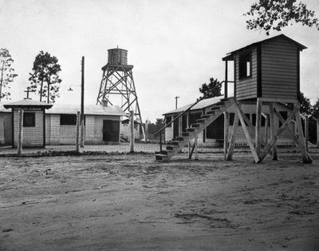
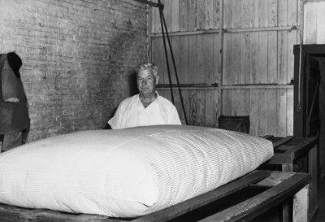
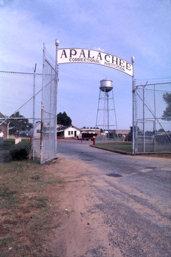

Malachi Martin and the Birth of Florida's First State Prison
Florida entered Reconstruction without a mature state prison system. Before the Civil War, punishment remained largely local. County jails, fines, corporal penalties, and other forms of custody existed, but the state had not yet developed a permanent centralized institution capable of holding large numbers of convicted people under a single administrative authority. That changed after the war, when Florida officials began constructing a state penitentiary at the former United States arsenal at Chattahoochee. The prison that emerged there became one of the earliest foundations of Florida's modern correctional system.
At the center of that experiment stood Malachi Martin.
Martin arrived in Florida with experience as an Irish immigrant, New York merchant, Union Army officer, and military quartermaster. His wartime service trained him in logistics, property management, transportation, supplies, and institutional administration. He entered the Union Army in 1861 and eventually served as a captain and assistant quartermaster. By 1865, he had reached Tallahassee as chief quartermaster for the Middle District of Florida, placing him inside the federal administration of the state during the first months after the Confederacy's defeat.
That military background became unexpectedly important three years later. In 1868, Florida created a penitentiary that the law explicitly envisioned as a military-style institution. The former Chattahoochee arsenal provided the physical setting. The new prison was expected to confine people sentenced to hard labor, maintain order through a regimented chain of command, and use incarcerated labor in ways that could help offset the state's expenses. On November 16, 1868, Martin received his appointment as commanding officer of the new institution. His appointment was confirmed in January 1869.
The appointment placed Martin at the beginning of Florida's sustained experiment with centralized imprisonment. His initial title was commandant. When Florida reorganized the prison under a civil administrative structure in 1871, the state retained him in the newly defined office of warden. Martin's career spans the transition from a military-style institution to a civilian penal administration.
Chattahoochee Before the Prison
The prison story begins with the place itself. Chattahoochee sits on high bluffs above the Apalachicola River near the confluence of the Flint River, Spring Creek, and the Chattahoochee River. Long before the modern city, the river landing supported Native communities whose trade routes connected the interior Southeast with the Gulf. The Chattahoochee Landing Mounds, built over many centuries and associated with Fort Walton culture, remain physical evidence of that earlier history.
European and American powers later treated the same geography as a military corridor. The landing stood along routes used during the Spanish mission era, the War of 1812, the Seminole conflicts, and the contested transfer of Florida from Spain to the United States. The 1817 attack on a U.S. Army boat near the river helped provoke Andrew Jackson's invasion of Florida. River access and elevated ground made Chattahoochee a strategic site for commerce, military supply, surveillance, and state power.
In the 1820s the settlement was known as Mount Vernon. A ferry and river port connected it to Gadsden County's plantation economy. The U.S. Army selected the site for an arsenal because it stood at the head of the Apalachicola waterway. Construction began in 1834 and was completed in 1839. The four-acre Apalachicola Arsenal was enclosed by a strong brick wall and included a powder magazine, barracks, workshops, and officers' quarters. The community was eventually renamed Chattahoochee after postal confusion with Mount Vernon, Alabama.



The Arsenal and the Civil War
The arsenal's purpose changed as Florida entered the Civil War. On January 6, 1861, Florida militia seized the installation, making it the first military site in Florida taken by the forces that would become the Confederacy. The Confederate army used the grounds as a camp of instruction and barracks. The First and Sixth Florida Infantry were organized there before serving in battles including Shiloh, Chickamauga, Missionary Ridge, and Atlanta.
When the Confederacy fell, federal forces reoccupied the arsenal. The site therefore carried several layers of military meaning into Reconstruction: federal property, Confederate stronghold, storage facility, and a visible reminder of who controlled Florida after the war. When the arsenal was transferred to the state for use as a prison in 1868-69, Florida did not build its first penitentiary on an empty field. It repurposed a fortified site whose walls and administrative buildings already represented military authority.
Building Florida's First Prison
Martin inherited an institution that existed more clearly in law than in practice. The arsenal had walls, barracks, workshops, and officers' quarters, but converting a former military installation into a functioning penitentiary required substantial work. Martin's first annual report described repairs to barracks and porches, glazed windows, cleared grounds, new agricultural production, fencing, construction of a dam, and the establishment of a brickyard. He also reported that incarcerated people were being kept continuously at work for the benefit of the state.
The report provides an unusually direct view of Florida constructing a prison almost from the ground up. Agriculture supplied food and productive labor. Brickmaking helped create infrastructure. Prisoners repaired and improved the property that confined them. Labor therefore occupied a central position from the institution's earliest years. It was simultaneously a means of maintaining the prison, enforcing discipline, and producing economic value.
Chattahoochee's location shaped the institution's daily life. The river offered transportation and access to a wider regional economy, while the arsenal's walls allowed officials to concentrate custody in a single compound. Beyond those walls were farms, roads, timber, and waterways. The prison could use the surrounding landscape for food production and construction, but the same landscape also made escape, communication, and medical relief difficult.
Life Inside the Arsenal Prison
The physical limitations of Chattahoochee remained severe. Martin reported that proper cells were unavailable and that prisoners slept together in a common dormitory. The former arsenal had not been designed for the classification, sanitation, medical care, and privacy that a prison population required. Its military buildings could be adapted, but adaptation did not make them humane.
Guards relied upon chains, muskets, bayonets, solitary confinement, restricted food, and close supervision to prevent escape and enforce institutional rules. Martin described his own approach as firm but humane and argued that the discipline compared favorably with better established prisons elsewhere. That claim belongs to the history of the institution because it shows how the warden wanted the state to understand its new prison: orderly, productive, and governed by rules rather than uncontrolled violence.
The surviving record does not allow that self-assessment to stand alone. Complaints about violence and conditions began almost immediately. In July 1869, allegations circulated that a prisoner who attempted to escape had been treated cruelly. Governor Harrison Reed traveled to Chattahoochee with the Gadsden County sheriff to investigate. A court of inquiry cleared Martin of the specific cruelty charge, but the investigation made clear that punishment at the new prison was already a public question.
State officials could praise Martin's management while acknowledging the prison's inadequacy. The Commissioners of Public Institutions adopted his disciplinary rules in 1869. An inspection in 1871 described him as energetic and personally involved in virtually every aspect of the institution while calling the physical prison grossly inadequate. A legislative committee in 1872 reported that it found neither illegal employment of prison labor nor harsh disciplinary practices during its inspection.
By 1874, criticism had become more serious. A special investigator reviewing the treatment of federal prisoners found eighty-one people confined at Chattahoochee, most working under guard on the prison farm. He described the housing as filthy and infested with vermin. The prison was therefore both a productive agricultural workplace and a place where living conditions could fail basic standards of cleanliness. The two descriptions are not mutually exclusive; they reveal the institution's priorities.
Martin's Authority and Private Labor
Martin's public authority became especially controversial when prison labor intersected with his private property. After leaving military service, he pursued agricultural ventures in the Tallahassee and Gadsden County region. Grape cultivation became his most successful enterprise, and by the 1870s he had developed vineyards and promoted the potential of scuppernong grapes.
An 1877 investigating committee reported that prisoners had been employed on Martin's farm and vineyard at various times. The committee concluded that he should be charged at the same rate paid by other people who obtained prison labor, although the investigators could not determine the full extent of the work. State regulations had prohibited prison officers from using prisoners for private or personal purposes. The finding therefore concerned more than accounting: it tested whether the warden's office could be converted into private economic power.
Martin's tenure also crossed the transformation from commandant to warden. The original penitentiary was organized along military lines. In 1871, Florida placed prison governance under the Board of Commissioners of Public Institutions, created closer financial supervision, and established a civil office of warden. Martin remained in charge under the new structure. Chattahoochee was thus a laboratory in which Florida learned to move from military occupation toward civilian correctional administration without relinquishing labor discipline.
Chattahoochee in Reconstruction Politics
The prison was never separate from Reconstruction politics. Martin's relationship with Governor Reed was unstable, and in February 1870 Reed attempted to replace him, citing alleged violations that included bringing whiskey onto prison grounds, disregarding orders, abandoning his post, and remaining absent for extended periods. The removal failed for an administrative reason, but the episode shows that Martin's authority depended on a political chain of command.
Martin then entered the Florida Assembly from Gadsden County in 1872 and became Speaker of the Florida House of Representatives in 1874. The warden of Florida's first prison was simultaneously a leading legislator in the government responsible for prison appropriations, public institutions, and oversight. That overlap matters: debates about Chattahoochee were also debates about who would control Reconstruction Florida and how the state would pay for its institutions.
Reports of prison conditions became more charged as Black legislators attempted to inspect the facility. Contemporary accounts describe two Black members of the Florida Legislature being forcibly removed from the grounds after they encountered prisoners and conditions they considered troubling. Whether every detail of the incident can be independently reconstructed, the episode belongs to the history of Chattahoochee because access to the prison was itself political. The people confined there were being discussed as state property and labor while elected officials contested who had the right to see them.
From Prison to State Hospital
Chattahoochee's prison period was brief in institutional terms but lasting in physical consequence. In 1876, the former arsenal was reopened as the Florida Asylum for the Indigent Insane, later known as Florida State Hospital. The conversion did not erase the site's earlier use. It carried the prison's buildings, walls, labor practices, and administrative habits into a new institution devoted to psychiatric confinement.
That institutional afterlife is essential to the story. The modern Florida State Hospital occupies the same historical landscape that had served as an arsenal, a Confederate camp, and Florida's first state prison. The Sutori image of the prison department at the hospital makes that continuity visible: the photograph is later than Martin, but it records the persistence of a prison function within the hospital complex.
Later Chattahoochee chronicles add another layer. Sally J. Ling's Chronicles from Chattahoochee preserves first-person accounts from people who trained or worked at the hospital in the 1960s. Those stories describe patients navigating social workers, wards, food, release plans, family separation, pregnancy, and the ordinary routines of institutional life. They do not describe Martin's prison directly, but they show how the place continued to be experienced by people living and working inside a large state institution long after the arsenal's penal era had ended.
The chronicles also resist a single inherited interpretation. Some narrators remember indifference, poor food, and bureaucratic difficulty rather than direct physical abuse; others acknowledge that their access was partial and that they did not witness every ward or disciplinary action. This kind of limited testimony is valuable precisely because it makes its boundaries visible. Chattahoochee's history is made from official reports, investigations, photographs, local memory, and accounts from people whose vantage points never encompass the whole institution.
Chattahoochee as a Continuing Institution
The nearby Apalachee Correctional Institution in Sneads places Chattahoochee within a continuing regional geography of confinement. The local landscape now contains a state hospital and a correctional institution within a few miles of one another, echoing the older concentration of military, medical, and penal power at the arsenal site. The relationship is not identical across time, but the geography matters: Florida repeatedly placed institutions of custody along the Apalachicola corridor.
The mattress-factory photograph from the 1960s makes the labor question visible beyond Martin's era. It documents a later institutional workplace at the state hospital, not the nineteenth-century prison, and it should not be used as evidence of conditions in 1869. It does, however, show how work remained part of the institutional vocabulary at Chattahoochee after the site changed from penitentiary to hospital.
These images therefore form a chronology rather than a claim that all periods were the same: arsenal, prison, hospital workplace, and neighboring correctional institution. The continuity lies in the site's repeated use for organized custody and labor. The differences lie in the populations, legal categories, medical theories, administrative structures, and forms of coercion applied in each period.
J. C. Powell: A Brief Later Echo
J. C. Powell appears here only as a later witness to the prison world that followed Chattahoochee. His memoir, The American Siberia, belongs primarily to the era of dispersed convict labor, private leasing, turpentine camps, railroads, and road work. It can help trace what Florida's penal system became after the arsenal prison, but it should not displace Martin or the history of Chattahoochee itself.
Chattahoochee's history follows a river settlement and Indigenous landscape transformed into an arsenal, then a Reconstruction prison, then a state hospital whose institutional descendants still shape the region. Martin connects those first prison years to Florida's emerging correctional state.
What Survives of Malachi Martin
Malachi Martin died in Gadsden County on August 29, 1884. At his request, his remains were sent to New York for burial on Long Island. He left behind property, vineyards, a widow, and a public record scattered across military files, legislative journals, prison reports, newspapers, land records, correspondence, and later historical writing.
Historical interpretations of Martin's legacy have changed as military, legislative, prison, and financial records have been compared.
Powell's The American Siberia helped make Martin synonymous with brutality at Chattahoochee. Later scholarship complicated that portrait by returning to the administrative record. Fryman concluded that some criticism of Martin was justified, especially concerning the use of prison labor and the conditions under which the institution operated, but that the surviving evidence does not support every allegation Powell attached to him.
The record establishes Martin as a central subject in the development of Florida's early penal administration.
He stands at the intersection of military occupation and civilian government, punishment and labor, public office and private enterprise, Reconstruction politics and the development of Florida's state institutions. His administration reveals a government trying to determine what a prison should be while simultaneously deciding who would control it, how it would be financed, what work prisoners would perform, and how much authority one administrator could exercise over the people confined within it.
The prison at Chattahoochee did not become Florida's final correctional model. The state would later embrace convict leasing, prison farms, road labor, centralized institutions, classification systems, vocational programs, and the modern bureaucracy of corrections. Yet the questions that shaped those later developments were already visible during Martin's tenure.
Conclusion
Martin's story is central to the early history of Florida's penal system because it connects prison administration to the larger politics of Reconstruction. Martin was a Union quartermaster, agricultural entrepreneur, warden, legislator, speaker of the house, and public servant whose career moved across military and civil institutions at a critical moment in Florida's political development.
Martin anchors this narrative because his career shows how Florida's first prison was created, administered, contested, and politicized after the Civil War. Powell provides limited later context for the convict-labor system that followed.